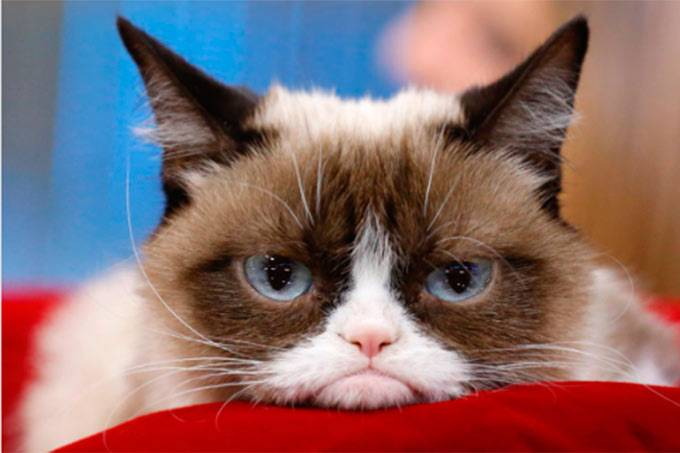
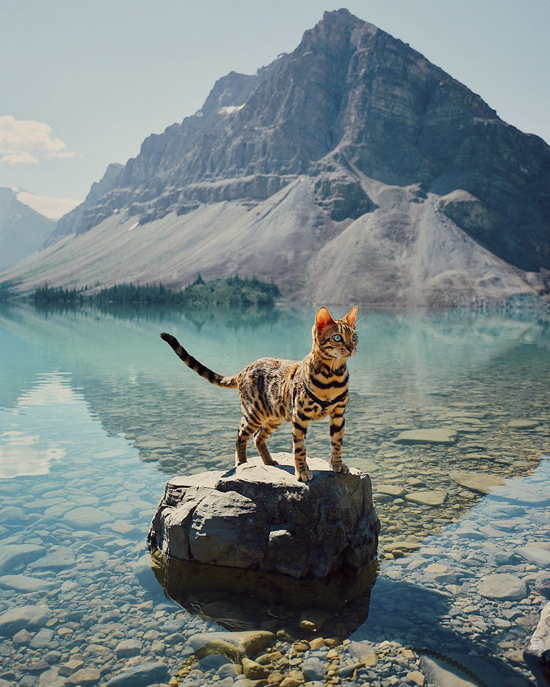
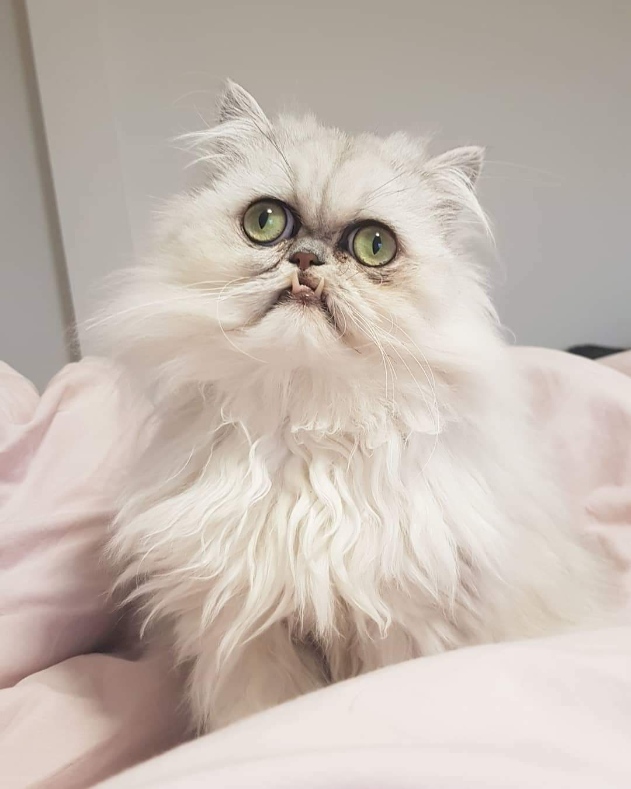
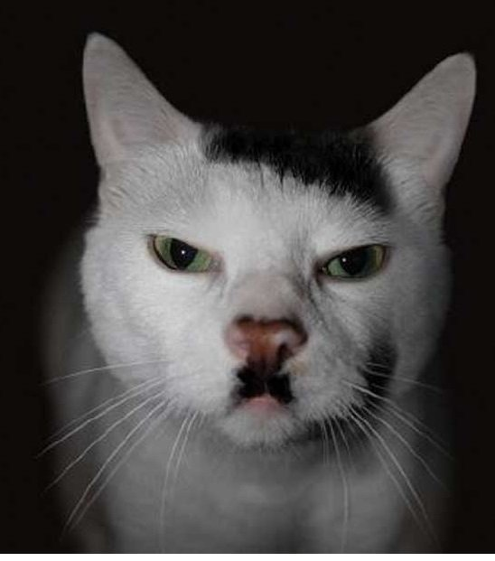
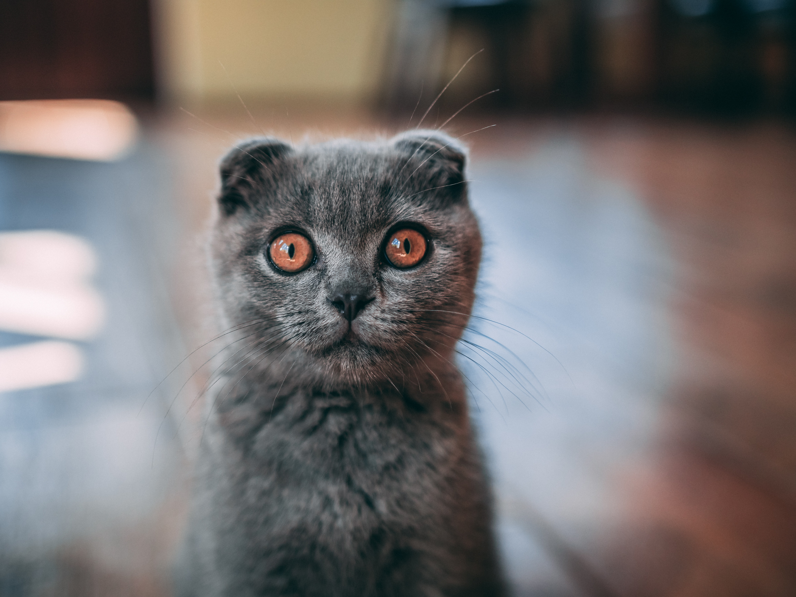
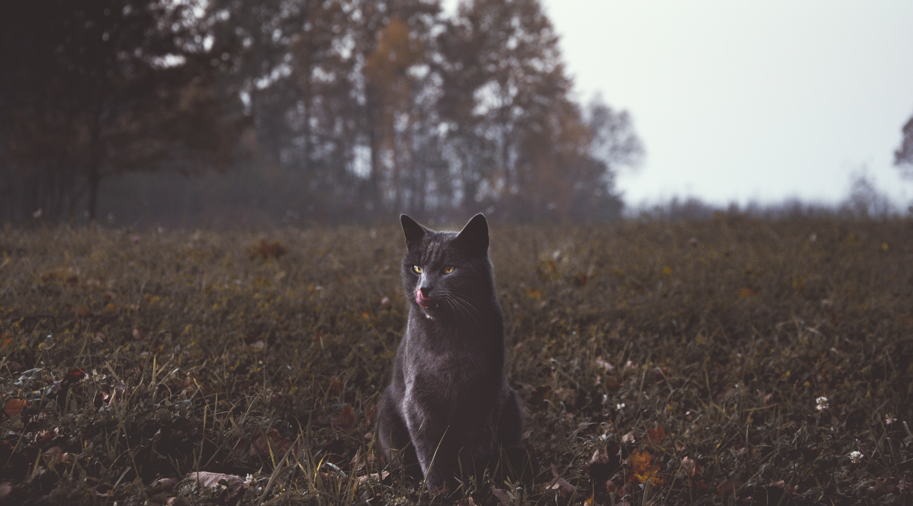
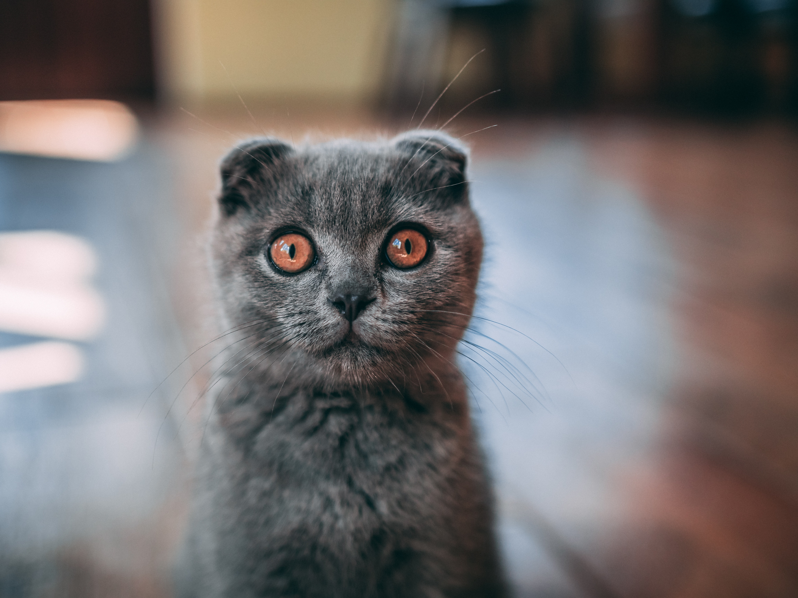
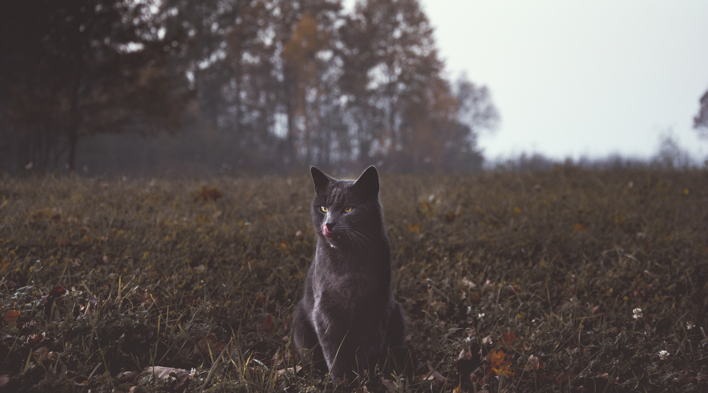

Link para a Wikipedia sobre gatos.
O gato (felis catus) é um mamífero carnívoro e quadrúpede pertencente à família Felidae e à ordem carnívora. É um animal doméstico apreciado por caçar ratos e ratazanas. Este animal possui unhas retráteis, ouvidos e olfacto bem aguçados, uma notável visão noturna e um corpo flexível, musculoso e compacto. Trata-se de um animal com boa memória e com capacidade de aprender por meio da observação e da experiência.
Especies de gatos mais conhecidas
- Persa
- Siamês
- Himalaia
- Bengal
- Maine Coon
Gatos famosos
-
Garfield

- Grumpy 
- Suki 
- Wilfred Warrior 
- Kitler 
Fotos


 


